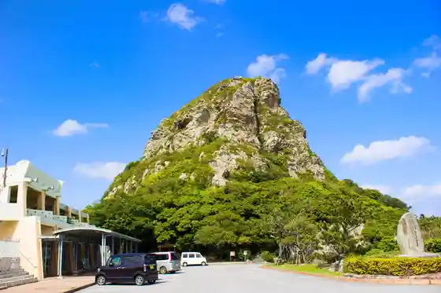
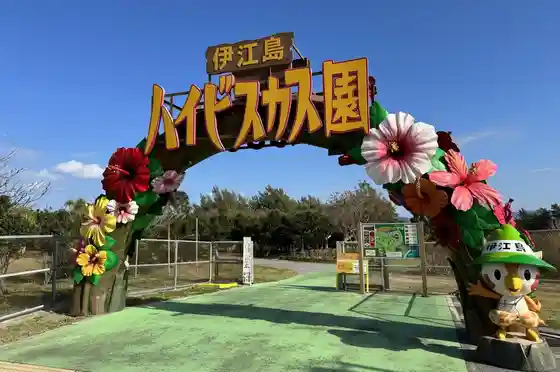

Iejima Beach
Iejima, Okinawa · 0980-49-5247 · Official / source link
Iejima no Shiroyama
Iejima, Okinawa · Official / source link

Iejima Shima no Beach De Joba Experience
Iejima, Okinawa · 0980-49-2337 · Official / source link
GI Beach
Iejima, Okinawa · 0980-49-2906 · Official / source link
Iejima Shima Haibisukasu Sono
Iejima, Okinawa · 0980-49-5850 · Official / source link

Ippan Shadanhojin Iejima Shima Tourism Association
Iejima, Okinawa · 0980-49-3519 · Official / source link
Nyateiya Hora
Iejima, Okinawa · Official / source link
Ririifiirudo Park
Iejima, Okinawa · Official / source link
Yushutsu
Iejima, Okinawa · Official / source link
A Kopu JA Yui Land Mise
Iejima, Okinawa · 0980-49-2107 · Official / source link
Sho Ta Tera
Iejima, Okinawa · 0980-49-2128 · Official / source link
Puchi Shoppumaruisutoa
Iejima, Okinawa · 0980-49-5250 · Official / source link
Shima Village Ya Kanko Park
Iejima, Okinawa · 0980-49-2422 · Official / source link
Anii Pairu Kinenhi
Iejima, Okinawa · Official / source link
Ara Ontake
Iejima, Okinawa · Official / source link
Famiriimato Iejima Mise
Iejima, Okinawa · 0980-49-2307 · Official / source link
Famiriimato Iejima Higashi Mise
Iejima, Okinawa · 0980-50-6011 · Official / source link
Iejima Shima Kantorii Club
Iejima, Okinawa · 0980-50-6969 · Official / source link
Iejima Shima Bussan Center
Iejima, Okinawa · 0980-49-2885 · Official / source link